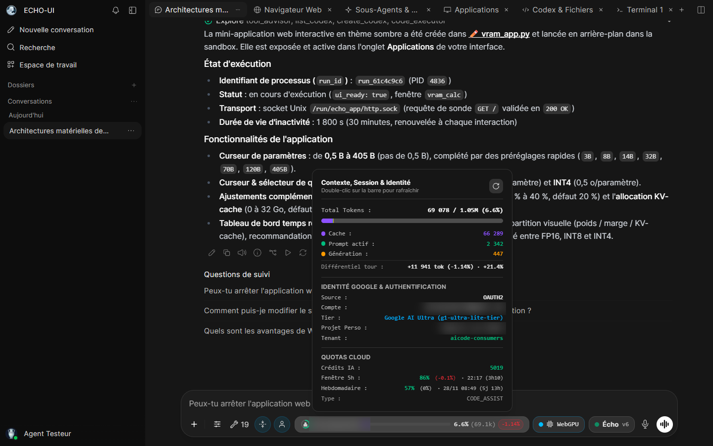
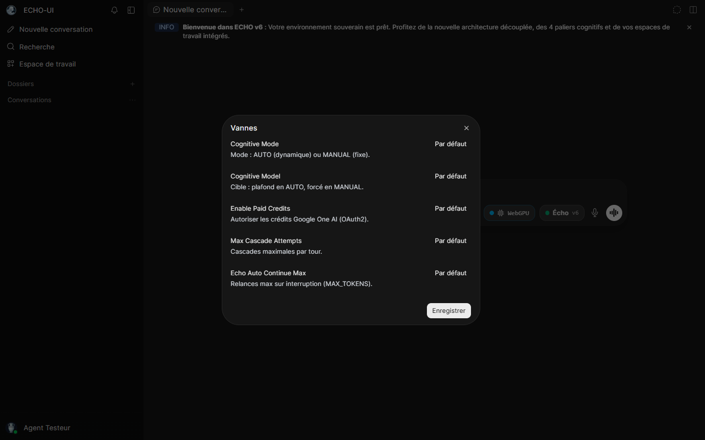

6. Communication Gemini
Pour assurer des échanges rapides, sûrs et sans coupure même lors de tâches longues ou de pics de charge côté fournisseur, ECHO gère intégralement la connexion aux modèles Google Gemini : authentification chiffrée, suivi en direct de vos quotas, sélection des voies de secours et reprise automatique en cas d'interruption.
Pourquoi cette couche est transparente mais utile à connaître
Lorsque vous envoyez un message, vos identifiants ne quittent jamais votre infrastructure privée pour être exposés dans le navigateur. Vous pouvez connecter votre compte Google personnel, ajouter une ou deux clés API de secours, consulter votre jauge de quotas à tout moment et régler le comportement de repli via les Vannes.
1. Les Deux Voies d'Authentification
Compte Google Personnel (OAuth2)
Mode principal recommandé. Lors de la première configuration, Écho vous fournit une procédure guidée et temporaire pour autoriser votre compte Google. Ce mode donne accès aux quotas glissants de 5 heures et hebdomadaires ainsi qu'aux éventuels crédits Google One AI associés au compte.
Clés API Google AI Studio (Secours)
Vous pouvez enregistrer une clé principale et une clé secondaire dans votre espace sécurisé. Si la voie OAuth2 atteint sa limite temporaire ou rencontre une indisponibilité, ECHO bascule silencieusement vers vos clés API pour éviter toute interruption de travail.
2. Lire la Jauge de Contexte, les Quotas et les Vannes

69 078 / 1.05M tokens, part en Cache, Différentiel tour), identité Google OAuth2 et quotas glissants (Fenêtre 5h et Hebdomadaire).
La jauge intégrée dans la barre de saisie rassemble trois familles d'informations au même endroit :
- Occupation du contexte : volume mis en Cache, volume du Prompt actif et volume de la dernière Génération.
- Identité Google & Authentification : mode actif (
OAUTH2ou clé API), compte associé, niveau d'abonnement (Tier) et identifiant de projet. - Quotas Cloud : Crédits IA disponibles, pourcentage restant sur la Fenêtre 5h, pourcentage restant sur la fenêtre Hebdomadaire et délai avant réinitialisation (affiché comme Imminent à l'approche de l'échéance).
Actualiser les quotas à la demande
Pour préserver vos appels, l'interrogation des compteurs Cloud est lissée automatiquement. Un double-clic sur la jauge force néanmoins un rafraîchissement immédiat de l'état de session et des quotas.

| Réglage (Vanne) | Effet utilisateur |
|---|---|
| Cognitive Mode | AUTO (défaut) adapte le palier à chaque étape ; MANUAL fige la conversation sur le palier choisi. |
| Cognitive Model | Sert de plafond maximal autorisé en mode AUTO (Athéna par défaut), ou de modèle fixe en mode MANUAL. |
| Enable Paid Credits | Autorise ou non l'utilisation des crédits Google One AI lors d'un repli ou d'un appel OAuth2. |
| Max Cascade Attempts | Nombre maximal de replis automatiques vers un palier inférieur au cours d'un même tour en cas de saturation. |
| Echo Auto Continue Max | Nombre maximal de reprises transparentes si une réponse ou un fichier généré dépasse la taille maximale d'une seule passe. |
3. Continuité de Service et Tolérance aux Pannes
- Bascule rapide multi-points d'accès : si un serveur Google répond lentement ou renvoie une surcharge temporaire, ECHO bascule immédiatement vers un point d'accès secondaire avant même de changer de modèle.
- Cascade descendante avec réflexion maximale : si le palier supérieur est saturé, ECHO descend d'un palier tout en forçant un effort de raisonnement maximal afin de préserver la qualité de la réponse.
- Reprise automatique sur réponse tronquée : lorsqu'une génération très longue atteint le plafond d'un seul tour, ECHO relance automatiquement la suite de la phrase ou de l'appel d'outil de manière invisible.
- Arrêt immédiat sur requête invalide : si un message est structurellement rejeté (par exemple un format de média non supporté), ECHO stoppe aussitôt et affiche la cause exacte au lieu de réessayer à perte.
4. Dépannage Rapide
| Situation observée | Cause probable | Action recommandée |
|---|---|---|
| Invitation à configurer l'authentification Google | Session jamais liée ou jeton révoqué / expiré. | Suivre la procédure guidée affichée ou enregistrer une clé API dans le profil / Coffre. |
| Réponse prise en charge par un palier inférieur | Quota temporaire atteint sur le palier supérieur (fenêtre 5h ou hebdomadaire). | Vérifier la jauge de quotas ; le comportement revient au nominal dès la réinitialisation indiquée. |
| Erreur immédiate sans repli après envoi d'un média | Contenu rejeté structurellement par l'API (format corrompu ou non accepté). | Vérifier le fichier joint ou réduire le lot envoyé avant de relancer. |
Dossier d'Ingénierie : Protocole HTTP/2, Auth PKCE, Circuit Breaker & Streaming
1. Authentification OAuth2 PKCE & Fallback API Keys
- Flux PKCE éphémère : Implémenté par
echo_auth.py(v6.21.10.1),echo_pkce_server.py(v5.226.18.0) etecho_ssh_tunnel.py(v6.5.0.1) via un serveurasyncsshéphémère sur les ports exposés8020-8024et des ports de callback internes8025-8034(RFC 7636 / RFC 8252). Durée de vie proactive du jeton :GOOGLE_OAUTH_TOKEN_LIFETIME = 3300s. - Quotas Cloud :
AuthServiceinterroge:retrieveUserQuotaSummaryetfetchAvailableModels(filtrés surca_model_idd'ECHO_MODELS_REGISTRY), avec lissageECHO_QUOTA_REFRESH_THROTTLE_SEC = 60set unification de la jauge commune"gemini"(fenêtres5hetHebdomadaire+google_g1_credits). - Fallback AI Studio :
AUTH_METHOD_KEY_PRIMARYetAUTH_METHOD_KEY_SECONDARYvalidés sur/models?key=...et stockés dansidentity.db::auth_data.
2. Client HTTP/2 Stealth & Circuit Breaker (echo_gemini_client.py)
- Transport & Timeouts : Client
httpxavec multiplexage HTTP/2 obligatoire (h2), construit parbuild_httpx_timeout()(connect=15.0s,write=30.0s,pool=15.0s,ECHO_LLM_CALL_TIMEOUT = 600snon-stream,ECHO_LLM_STREAM_TIMEOUT = 300sstream) et respect du délai serveurRetry-After/google.rpc.RetryInfoplafonné àECHO_RETRY_SERVER_MAX_WAIT_SEC = 60.0s. - Fast-Failover Pool & Blocages Prompt : Bascule entre les endpoints
AGY_BASE_URLS(cloudcode-pa.googleapis.com/v1internaletdaily-cloudcode-pa.googleapis.com/v1internal) sur codes401/420/429/500/503et timeouts réseau, avec verrouillage temporaireECHO_ENDPOINT_LOCK_TIMEOUT_MIN = 5min et garde anti-ping-pongtried_urls. Les erreurs HTTP400lèventFatalAPIErrorsans déclencher de cascade. Sur réponse vide ou bloquée,describe_empty_llm_response()diagnostiquepromptFeedback.blockReason/finishReason:call_cascade()déclenche un repli automatique sur faux positif isolé d'un modèle et ne lèvePromptBlockedErrorque si toute la cascade bloque, permettant à l'Orchestrateur et auSubagentHubd'annuler proprement l'étape utilisateur orpheline. - Streaming Base64 Zéro-RAM : Lecture par blocs de
3 Modepuis fichier (___ECHO_STREAM_FILE___) ou buffermemoryview(___ECHO_STREAM_MEM___), sans duplication RAM. - Adaptation protocolaire (
echo_protocol.pyv6.19.0.1) : Normalisation camelCase (inlineData,functionDeclarations,responseMimeType,responseSchemaOpenAPI 3.0), injection dynamique derequestType("agent"ou"image_gen"), cascade dynamique viaget_descending_cascade()avecget_generation_config(..., is_fallback_cascade=True)imposantthinkingLevel: "high"sur repli technique.